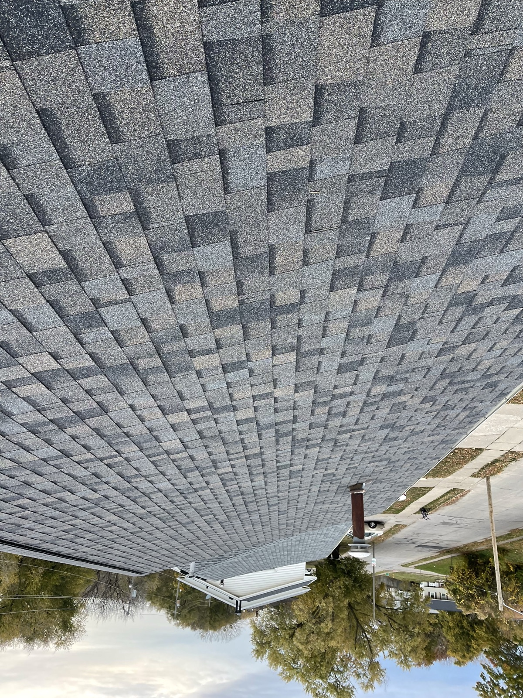

Your Trusted Exterior Contractor in Waukee, Iowa
Waukee is one of the fastest-growing cities in all of Iowa, and that growth brings specific needs that Black Ridge Contracting understands well. Neighborhoods like Kettlestone, Stratford Crossing, and the newer developments along Alice's Road are filled with homes built in the 2010s and 2020s. These homes look great from the outside, but many were built with builder-grade materials that do not hold up over time. We see it all the time. cheap cabinets that are already falling apart, basic countertops that stain easily, and flat paint that shows every scuff mark on the wall.
If your Waukee home is five to ten years old, you are probably hitting that window where things start to need attention. The roofing may still be in good shape, but the gutters might need cleaning or replacement after years of Central Iowa storms. Exterior painting starts to fade and peel after a few harsh winters with ice, wind, and temperature swings that can drop 50 degrees in a single day. Siding takes a beating too, and a refresh can make your home look brand new again.
Inside, basement finishing is one of the most popular projects we handle in Waukee. Many of these newer homes were sold with unfinished lower levels, and families are ready to turn that empty space into something useful. a rec room, home office, or extra bedroom. Kitchen remodeling is another big one, especially replacing those builder-grade cabinets and countertops with something that actually matches the quality of your home. Bathroom remodeling is right behind it, since many Waukee homeowners want to upgrade master baths that were finished with the cheapest tile and fixtures the builder could find.
We also pour and replace concrete driveways, patios, and sidewalks throughout Waukee. Black Ridge Contracting is family-owned and based right up the road in Ankeny, so we are never far from your project. We treat every Waukee home like it is our own. honest pricing, quality materials, and a clean job site when we leave.
- Family-owned, based just minutes away in Ankeny
- Fully licensed and insured in Iowa
- Free, no-pressure estimates
- 24/7 emergency storm damage response


Waukee's Roofing Contractor. Here's What Homeowners Actually Need to Know.
Waukee is one of the fastest-growing cities in Iowa, and it shows in the roofing stock. The vast majority of Waukee homes were built between 2000 and today, with waves of subdivisions in Kettlestone, Fox Creek, Sugar Creek Park, and along the Alice's Road corridor. Most Waukee roofs are still original builder-grade asphalt shingles, which puts them in three cohorts: early-2010s builds now at the 10-to-15 year mark and due for inspection, 2015-to-2020 builds at 5-to-10 years and mostly still fine, and 2020+ builds still like new. The 2000-to-2010 stock, particularly in older parts of Waukee near Warrior Run, is now inside the 20-year replacement window.
Central Iowa hail exposure in Waukee is real, though slightly less severe than the northeast metro (Ankeny, Johnston, Grimes tend to sit in harder hail tracks). Wind damage from spring and summer storms lifts shingles at ridges, eaves, and around penetrations. If a storm rolls through Waukee and you see anything in the yard, get an inspection scheduled. See our storm damage roof repair process, or schedule a free inspection.
The typical Waukee roof job runs $8,000 to $15,000 for a standard asphalt replacement. Given Iowa hail patterns and how many Waukee homes are approaching first-replacement age, Class 4 impact-resistant shingles are a real consideration. Most Iowa insurers offer a homeowners policy discount for that upgrade that often pays back the cost over the life of the roof. Read the full roof replacement process.
Sometimes a repair is the right call. If your Waukee roof is under 15 years old and the damage is localized (failed vent boot, chimney flashing, missing shingles after wind), we quote the repair honestly. See the full list of roof repair jobs we handle. We do not push replacements when a repair will do the job.
We work Waukee projects nearly every week. Waukee requires a building permit for roof replacement and requires proper contractor licensing. We handle both.
See All Roofing Services in Waukee →Services We Provide in Waukee, Iowa
From your roof to your kitchen, Black Ridge handles it all, inside and out, for Waukee homeowners.

Roofing in Waukee
New roofs, replacements, storm damage repair, and inspections for Waukee homeowners.
Learn about roofing →
Siding in Waukee
Vinyl, fiber cement, and engineered wood siding to protect and beautify your Waukee home.
Explore siding options →
Gutters in Waukee
Gutter installation, repair, and guards to protect your Waukee home's foundation.
See gutter solutions →
Concrete in Waukee
Driveways, sidewalks, patios, and steps for Waukee homes. Removal and replacement.
Get a concrete quote →
Kitchen Remodeling in Waukee
Cabinets, countertops, flooring, and full kitchen renovations for Waukee homeowners.
Plan your kitchen remodel →
Bathroom Remodeling in Waukee
Showers, tile, vanities, and complete bathroom redesigns for Waukee homes.
Start your bathroom remodel →
Basement Finishing in Waukee
Turn unused space into living space. Framing, drywall, flooring, and full buildouts.
Explore basement options →
Interior Painting in Waukee
Walls, ceilings, trim, and cabinets. Clean lines and a fresh look for your Waukee home.
Get a painting estimate →Questions Waukee Homeowners Ask Us
Yes. Waukee requires a building permit for roof replacement, and the contractor must have proper Iowa licensing. We pull the permit for you and coordinate any required inspections.
Most residential roof replacements in Waukee run between $8,000 and $15,000 for a standard asphalt shingle install. Given how many Waukee homes are approaching first-replacement age, Class 4 impact-resistant shingles are worth pricing during your estimate for the insurance discount.
Some are. The vast majority of Waukee homes were built between 2000 and today, so roofs fall into three cohorts. 2000-to-2010 stock in older parts of Waukee is inside the 20-year replacement window. Early-2010s builds are at 10-to-15 years and due for inspection. 2015+ builds are typically still fine. We do a free inspection so you know where yours actually stands.
Central Iowa hail exposure in Waukee is real, though slightly less severe than the northeast metro. Hail bruising on shingles and dented soft-metal fixtures on vents, flashing, and gutters are the most common findings after a Waukee storm. Wind damage lifts shingles at ridges and eaves.
Roofing (new construction, replacements, storm damage repair, and inspections), siding installation (vinyl, fiber cement, engineered wood), gutter services (installation, repair, guards), concrete work (driveways, sidewalks, patios, steps), and interior remodeling (kitchens, bathrooms, basement finishing, interior painting) throughout Waukee, IA.
Call us at (515) 219-4654 or fill out our online form. We schedule a free, no-obligation visit to your Waukee property, inspect the work needed, and provide a clear written quote usually within 24 hours.